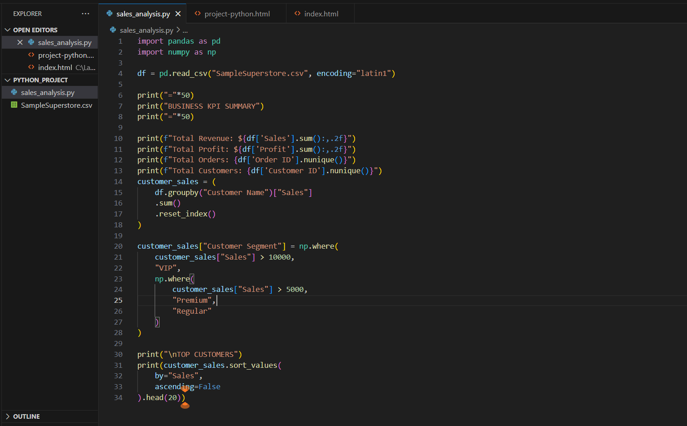
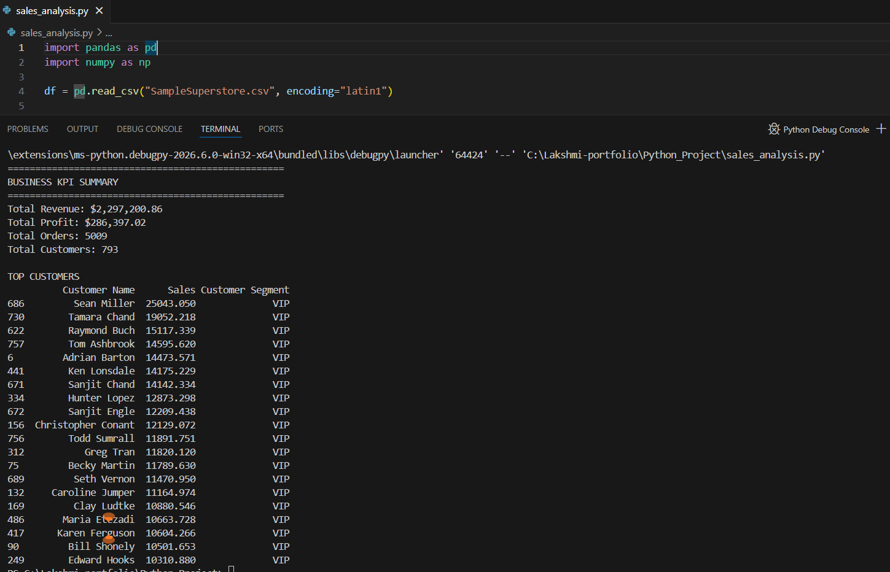

This project demonstrates advanced data analysis using Python, Pandas and NumPy on a retail sales dataset containing over 9,000 transactions.
The objective was to analyze business performance, identify high-value customers, calculate key business KPIs, and generate meaningful insights from raw transactional data.

Loaded and validated retail sales data using Pandas. Performed KPI calculations and built customer segmentation logic to classify customers into VIP, Premium and Regular categories based on sales contribution.

Generated key business metrics including Total Revenue, Total Profit, Total Orders and Total Customers. Identified top-performing customers and analyzed customer contribution to overall business revenue.